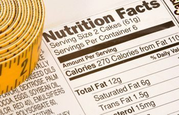

แคลอรี่ (calorie) คืออะไร?

แคลอรี่ หรือ แคลอรี่ (calorie) คือ หน่วยในการวัดพลังงาน ที่เรามักจะเห็นได้จากฉลากข้างกล่องบรรจุอาหารต่าง
ๆ
ซึ่งมีไว้เพื่อบอกปริมาณแคลอรี่ของอาหารที่ได้รับประทานเข้าไป เพราะร่างกายต้องการพลังงาน
Small calorie (แคลอรี่เล็ก) เป็นหน่วยของปริมาณความร้อน โดย 1 แคลอรี่
จะหมายถึงปริมาณความร้อนที่ทำให้น้ำบริสุทธิ์ 1 กรัม มีอุณหภูมิเพิ่มขึ้น 1 องศาเซลเซียส
ที่ความดันบรรยากาศ 1 แคลอรี่ จะเท่ากับ 4.186 จูล (joule)
Large calorie (แคลอรี่ใหญ่) เป็นหน่วยของพลังงานที่ได้จากการเผาผลาญอาหาร แคลอรี่สำหรับอาหาร (food
calorie)
จะเป็น large calorie โดย 1 แคลอรี่อาหาร
จะมีค่าเท่ากับ 1 กิโลแคลอรี่ (kcal) หรือ 1,000 แคลอรี่ ซึ่งอาจจะเรียกเพียง "แคลอรี่"
แทนการเรียกชื่อเต็มว่า
"กิโลแคลอรี่"
ก็ได้ โดยจะมีค่าเทียบเท่ากับพลังงานที่ทำให้น้ำ 1 กิโลกรัม มีอุณหภูมิเพิ่มขึ้น 1 องศาเซลเซียส หรือเท่ากับ
4.186 กิโลจูล (kilojoule หรือ KJ)
แคลอรี่ (cal) คือ หน่วยวัดพลังงาน โดยหนึ่งแคลอรี่ก็คือปริมาณที่ทำให้น้ำ 1 กรัม มีอุณหภูมิเพิ่มขึ้น 1
องศาเซลเซียส ส่วนพลังงานที่ใช้ในร่างกายหรือพลังงานที่ได้รับจากอาหารจะเรียกเป็น "กิโลแคลอรี่" (kcal)
ซึ่งมีไว้เพื่อบอกให้เราทราบว่า อาหารที่เรารับประทานมีแคลอรี่เท่าไหร่ แล้วเราควรจะเลือกบริโภคอาหารชนิดใด
เพื่อให้เพียงพอในชีวิตประจำวัน
รู้จักกับแคลอรี่ให้มากขึ้น
จูล หรือ กิโลจูล คือ หน่วยของพลังงานไฟฟ้า โดยทั่วไปแล้วจะนำมาใช้ในทางวิทยาศาสตร์
โดยจะมีค่าเท่ากับพลังงานที่ได้รับจากการปล่อยกระแสไฟฟ้า 1 แอมแปร์ วิ่งผ่านตัวต้านทาน ที่มีความทาน 1 โอห์ม
เป็นระยะเวลา 1 วินาที
แคลอรี่และกิโลจูลมีความหมายคล้ายกัน แต่มีหน่วยต่างกัน ในประเทศไทยเรานิยมใช้แค่หน่วย แคลอรี่ (Calories)
หรือ กิโลแลอรี (Kcal) แต่ในต่างประเทศมักจะนิยมใช้หน่วยกิโลจูลควบคู่ไปกับแคลอรี่ ดังนั้น
หากต้องอ่านฉลากอาหารของต่างประเทศที่ไม่มีบอกหน่วยแคลอรี่ แต่บอกเพียงหน่วยกิโลจูล
ก็ให้เอา 4.184 ไปหาร เพียงเท่านี้คุณก็จะทราบปริมาณแคลอรี่ของอาหารชนิดนั้นแล้ว
ทั้งหน่วยแคลอรี่และหน่วยจูล ต่างก็เป็นหน่วยที่เล็กมาก เมื่อเราพูดถึงอาหารหรือพลังงาน
เราก็มักจะพูดถึงมันในรูปของผลคูณของ 1,000 ซึ่งหมายความว่า 1,000 แคลอรี่ ก็คือ 1 กิโลแคลอรี่ หรือ 1,000
แคลอรี่ ส่วนคำว่า 1,000 จูล ก็คือ 1,000 กิโลจูล
เมื่อพูดถึงพลังงานที่ได้จากอาหาร (Nutritional energy) เราจะเรียกว่า Calorie แทนการใช้คำว่า Energy
โดยจะเขียนแคลอรี่ที่หมายถึงพลังงานที่ได้จากอาหารนี้ด้วย C ตัวใหญ่ (Cal หรือ เรียกว่า แคลอรี่ใหญ่) โดย 1
Calorie (Nutritional calorie) จะมีค่าเท่ากับ 1,000 standard calories
(cal ใช้ซีตัวเล็ก หรือเรียกว่า แคลอรี่เล็ก) ซึ่งมีค่าเท่ากับ 1 kcal สรุปก็คือ 1,000 cal = 1 Cal = 1 kcal
ถ้าจะพูดกันให้เข้าใจง่าย ๆ แคลอรี่ ก็คือ กิโลแคลอรี่ (ไม่ต้องเอาตัวเลขไปคูณด้วย 1,000 อีก
เนื่องจากมีบางท่านเข้าใจว่าแคลอรี่คือหน่วย ส่วนกิโลคือ 1,000) เพราะถ้านับเพียง "แคลอรี่" (cal)
อย่างเดียวตัวเลขมันจะเยอะ ก็เลยทำเป็นกิโลด้วยการเติม k ลงไป แต่นักวิชาการยังเห็นว่าการที่เติม k ลงไปเป็น
kcal มันก็ยังดูเยอะอยู่ดี ก็เลยตัด k ออก แล้วเขียนแคลอรี่ขึ้นมาใหม่โดยใช้ตัว C (ตัวใหญ่) แทน c (ตัวเล็ก)
ก็จะได้เป็น Cal ซึ่งตัวซีตัวใหญ่ก็จะมีค่าเป็นหนึ่งพันไปด้วย จึงสรุปได้ว่า Cal = kcal
แต่เมื่อนักโภชนาการใช้หน่วย นี้ไปนาน ๆ (อาจไม่ได้คิดเผื่อคนอื่น) ก็เลยเขียนเป็นซีตัวเล็กหมด
ทั้งแคลอรี่และจูลมันเกี่ยวข้องยังไงกับร่างกาย?
เนื่องจากเราไม่ได้ใช้พลังงานในการทำให้อุณหภูมิของน้ำเพิ่มขึ้นหรือปล่อยให้มันวิ่งผ่านตัวต้านทาน
แต่ร่างกายของเราต้องการใช้พลังงานเหล่านี้เพื่อรักษาอุณหภูมิในร่างกายให้คงที่และนำพลังงานเหล่านี้ไปใช้ในการทำกิจกรรมของอวัยวะต่าง
ๆ ในร่างกาย
สารอาหารที่ให้พลังงาน
โปรตีน จะให้พลังงาน 4 แคลอรี่ต่อกรัม
คาร์โบไฮเดรต จะให้พลังงาน 4 แคลอรี่ต่อกรัม (เท่ากับโปรตีน)
ไขมัน จะให้พลังงานสูงสุดคือ 9 แคลอรี่ต่อกรัม (ให้พลังงานเป็น 2 เท่าของคาร์โบไฮเดรตหรือโปรตีน)
ปริมาณแคลอรี่ที่ควรได้รับในแต่ละวัน
โดยปกติแล้วปริมาณของแคลอรี่ที่ควรบริโภคต่อวันสำหรับคนทั่วไปที่ทำงานหนักปานกลาง คือประมาณ 2,000
กิโลแคลอรี่
แต่สำหรับผู้ที่ทำงานหนักหรือต้องใช้พลังงานมาก เช่น กรรมกร หรือนักกีฬา ก็ต้องการพลังงานมากกว่านี้
ส่วนผู้ที่ทำงานเบากว่าคนปกทั่วไปก็ต้องการพลังงานน้อยกว่านี้
และการบริโภคในแต่ละมื้อสำหรับคนทั่วไม่ควรจะเกิน
600 กิโลแคลอรี่ โดยอาหารจานเดียว อย่างเช่น ข้าวผัด ก๋วยเตี๋ยว จะให้พลังงานประมาณ 300-500 กิโลแคลอรี่
ตามคำแนะนำของ Thai Recommended Daily Intakes (Thai RDI)
ได้ระบุปริมาณของสารอาหารที่แนะนำให้บริโภคต่อวันสำหรับคนไทยที่มีอายุตั้งแต่ 6 ปีขึ้นไป
ซึ่งคิดจากความต้องการพลังงานวันละ 2,000 แคลอรี่ โดยปริมาณที่ควรบริโภคต่อวันของคาร์โบไฮเดรตคิดเป็น 60%
(1,200
กิโลแคลอรี่) หรือเป็นปริมาณที่ควรบริโภคเท่ากับ 300 กรัมต่อวัน, โปรตีน 10% (200 กิโลแคลอรี่)
หรือเป็นปริมาณที่ควรบริโภคเท่ากับ 50 กรัมต่อวัน, และไขมัน 30% (600 กิโลแคลอรี่)
หรือเป็นปริมาณที่ควรบริโภคเท่ากับ 66.6 กรัมต่อวัน
หากต้องการพลังงานมากหรือน้อยกว่านี้ให้ปรับเพิ่มหรือลดลงตามสัดส่วนจากพลังงานทั้งหมดที่ต้องการต่อวัน
ซึ่งร่างกายของเราจะใช้พลังงานเหล่านี้ในการทำให้ระบบต่าง ๆ
ภายในร่างกายทำงานและกักเก็บพลังงานส่วนเกินไว้ในรูปของไขมันและแหล่งพลังงานอื่น ๆ
ตามอวัยวะในร่างกายไว้ใช้ในอนาคต
วิธีคำนวณแคลอรี่
โดยทั่วไปแล้วคนเราจะต้องการแคลอรี่วันละประมาณ 20-35 แคลอรี่ ต่อน้ำหนักตัว 1 กิโลกรัม
ซึ่งขึ้นอยู่กับว่ามีเราไขมันส่วนเกินอยู่ในร่างกายมากน้อยเพียงใด และมีกิจกรรมต่าง ๆ
ในแต่ละวันว่ามากน้อยแค่ไหน ไม่ว่าจะเป็นการเดิน การวิ่ง การออกกำลังกาย การทำงาน ฯลฯ
แคลอรี่ที่ต้องการใช้ในแต่ละวันสำหรับผู้ชาย = น้ำหนักตัว x 31 (ตัวอย่างเช่น น้ำหนัก 60
ก็จะได้คำนวณได้แคลอรี่ที่ต้องการใช้ต่อวันเท่ากับ 60x31= 1,860 กิโลแคลอรี่) หรือโดยเฉลี่ยประมาณ 2,000
กิโลแคลอรี่
แคลอรี่ที่ต้องการใช้ในแต่ละวันสำหรับผู้หญิง = น้ำหนักตัว x 27 (ตัวอย่างเช่น น้ำหนัก 50
ก็จะได้คำนวณได้แคลอรี่ที่ต้องการใช้ต่อวันเท่ากับ 50x27= 1,350 กิโลแคลอรี่) หรือโดยเฉลี่ยประมาณ 1,600
กิโลแคลอรี่
จำนวนแคลอรี่ที่แต่ละคนใช้ไปในแต่ละวัน หรือที่เรียกว่า Total Daily Energy Expenditure (TDEE)
เพื่อให้เข้าใจง่าย จึงขอแบ่งตามความต้องการแคลอรี่ของคนทั่วไปออกเป็น 3 กลุ่ม ดังนี้
ผู้ที่ใช้พลังงานวันละประมาณ 1,200-1,600 แคลอรี่ ได้แก่ ผู้หญิงตัวเล็กที่ออกกำลังกายสม่ำเสมอ
และผู้หญิงที่มีรูปร่างกายปานกลางที่ไม่ได้ออกกำลังกายอย่างสม่ำเสมอ แต่กำลังต้องการลดน้ำหนักอยู่พอดี
ผู้ที่ใช้พลังงานวันละประมาณ 1,600-2,000 แคลอรี่ ได้แก่ ผู้หญิงที่มีรูปร่างใหญ่
ผู้ชายที่มีรูปร่างเล็กที่ใช้แรงงานมาก ผู้ชายรูปร่างกายปานกลางที่ไม่ได้ออกกำลังกายอย่างสม่ำเสมอ
และผู้ชายที่รูปร่างปานกลางที่ใช้แรงงานมากอยู่แล้วและอยากลดน้ำหนักด้วย
ผู้ที่ใช้พลังงานวันละประมาณ 2,000-2,400 แคลอรี่ ได้แก่
ผู้หญิงหรือผู้ชายที่มีรูปร่างกายขนาดกลางถึงใหญ่ที่ชอบออกแรงทั้งวัน
ผู้ชายรูปร่างใหญ่มากที่ไม่ได้ใช้แรงงานอะไรมากมาย และผู้ชายรูปร่างใหญ่มากและใช้งานมาก
อีกทั้งยังต้องการลดน้ำหนักด้วย